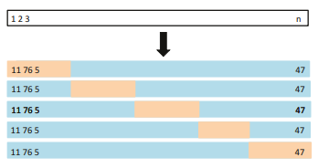
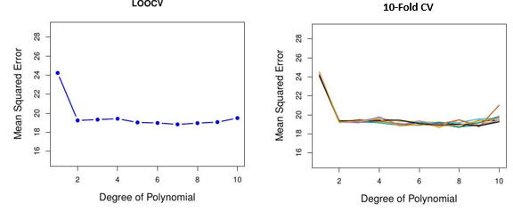

Model validation and Resampling
Genetics Microbiology and Statistics Department. University of Barcelona
Cross-validation and Bootstrap
Error estimation and, in general, performance assessment in predictive models is a complex process.
A key challenge is that the true error of a model on new data is typically unknown, and using the training error as a proxy leads to an optimistic evaluation.
Resampling methods, such as cross-validation and the bootstrap, allow us to approximate test error and assess model variability using only the available data.
What is best it can be proven that, well performed, they provide reliable estimates of a model’s performance.
This section introduces these techniques and discusses their practical implications in model assessment.
Prediction (generalization) error
We are interested the prediction or generalization error, the error that will appear when predicting a new observation using a model fitted from some dataset.
Although we don’t know it, it can be estimated using either the training error or the test error estimators.
Training Error vs Test error
The test error is the average error that results from using a statistical learning method to predict the response on a new observation, one that was not used in training the method.
The training error is calculated from the difference among the predictions of a model and the observations used to train it.
Training error rate often is quite different from the test error rate, and in particular the former can dramatically underestimate the latter.
The three errors
| Measure | Formula | Interpretation | Bias |
|---|---|---|---|
| Generalization Error \(\mathcal{E}(f)\) | \(\mathbb{E}_{X_0, Y_0} [ L(Y_0, f(X_0)) ]\) | True expected test error (unknown) | None |
| Test Error Estimator \(\hat{\mathcal{E}}_{\text{test}}\) | \(\frac{1}{m} \sum_{j=1}^{m} L(Y_j^{\text{test}}, f(X_j^{\text{test}}))\) | Estimate of generalization error (unbiased) | Low |
| Training Error Estimator \(\hat{\mathcal{E}}_{\text{train}}\) | \(\frac{1}{n} \sum_{i=1}^{n} L(Y_i^{\text{train}}, f(X_i^{\text{train}}))\) | Measures fit to training data (optimistic) | High |
Training- versus Test-Set Performance

Prediction-error estimates
Ideal: a large designated test set. Often not available
Some methods make a mathematical adjustment to the training error rate in order to estimate the test error rate: \(Cp\) statistic, \(AIC\) and \(BIC\).
Instead, we consider a class of methods that
- Estimate test error by holding out a subset of the training observations from the fitting process, and
- Apply learning method to held out observations
Validation-set approach
Randomly divide the available samples into two parts: a training set and a validation or hold-out set.
The model is fit on the training set, and the fitted model is used to predict the responses for the observations in the validation set.
The resulting validation-set error provides an estimate of the test error. This is assessed using:
- MSE in the case of a quantitative response and
- Misclassification rate in qualitative response.
The Validation process

A random splitting into two halves: left part is training set, right part is validation set
Example: automobile data
Goal: compare linear vs higher-order polynomial terms in a linear regression
Method: randomly split the 392 observations into two sets,
- Training set containing 196 of the data points,
- Validation set containing the remaining 196 observations.
Example: automobile data (plot)

Left panel single split; Right panel shows multiple splits
Drawbacks of the (VS) approach
In the validation approach, only a subset of the observations -those that are included in the training set rather than in the validation set- are used to fit the model.
The validation estimate of the test error can be highly variable, depending on which observations are included in the training set and which are included in the validation set.
This suggests that validation set error may tend to over-estimate the test error for the model fit on the entire data set.
\(K\)-fold Cross-validation
Widely used approach for estimating test error.
Estimates give an idea of the test error of the final chosen model
Estimates can be used to select best model,
\(K\)-fold CV mechanism
- Randomly divide the data into \(K\) equal-sized parts.
- Repeat for each part \(k=1,2, \ldots K\),
- Leave one part, \(k\), apart.
- Fit the model to the combined remaining \(K-1\) parts,
- Then obtain predictions for the left-out \(k\)-th part.
- Combine the results to obtain the crossvalidation estimate of tthe error.
\(K\)-fold Cross-validation in detail
A schematic display of 5-fold CV. A set of n observations is randomly split into fve non-overlapping groups. Each of these ffths acts as a validation set (shown in beige), and the remainder as a training set (shown in blue). The test error is estimated by averaging the fve resulting MSE estimates
The details
Let the \(K\) parts be \(C_{1}, C_{2}, \ldots C_{K}\), where \(C_{k}\) denotes the indices of the observations in part \(k\). There are \(n_{k}\) observations in part \(k\) : if \(N\) is a multiple of \(K\), then \(n_{k}=n / K\).
Compute \[ \mathrm{CV}_{(K)}=\sum_{k=1}^{K} \frac{n_{k}}{n} \mathrm{MSE}_{k} \] where \(\mathrm{MSE}_{k}=\sum_{i \in C_{k}}\left(y_{i}-\hat{y}_{i}\right)^{2} / n_{k}\), and \(\hat{y}_{i}\) is the fit for observation \(i\), obtained from the data with part \(k\) removed.
\(K=n\) yields \(n\)-fold or leave-one out cross-validation (LOOCV).
Auto data revisited
Issues with Cross-validation
- Since each training set is only \((K-1) / K\) as big as the original training set, the estimates of prediction error will typically be biased upward. Why?
- This bias is minimized when \(K=n\) (LOOCV), but this estimate has high variance, as noted earlier.
- \(K=5\) or 10 provides a good compromise for this bias-variance tradeoff.
CV for Classification Problems
- Divide the data into \(K\) roughly equal-sized parts \(C_{1}, C_{2}, \ldots C_{K}\).
- There are \(n_{k}\) observations in part \(k\) and \(n_{k}\simeq n / K\).
- Compute \[ \mathrm{CV}_{K}=\sum_{k=1}^{K} \frac{n_{k}}{n} \operatorname{Err}_{k} \] where \(\operatorname{Err}_{k}=\sum_{i \in C_{k}} I\left(y_{i} \neq \hat{y}_{i}\right) / n_{k}\).
Standard error of CV estimate
- The estimated standard deviation of \(\mathrm{CV}_{K}\) is:
\[ \widehat{\mathrm{SE}}\left(\mathrm{CV}_{K}\right)=\sqrt{\frac{1}{K} \sum_{k=1}^{K} \frac{\left(\operatorname{Err}_{k}-\overline{\operatorname{Err}_{k}}\right)^{2}}{K-1}} \]
- This is a useful estimate, but strictly speaking, not quite valid. Why not?
Why is this an issue?
In (K)-fold CV, the same dataset is used repeatedly for training and testing across different folds.
This introduces correlations between estimated errors in different folds because each fold’s training set overlaps with others.
The assumption underlying this estimation of the standard error is that \(\operatorname{Err}_{k}\) values are independent, which does not hold here.
The dependence between folds leads to underestimation of the true variability in \(\mathrm{CV}_K\), meaning that the reported standard error is likely too small, giving a misleading sense of precision in the estimate of the test error.
CV: right and wrong
Consider a classifier applied to some 2-class data:
- Start with 5000 predictors & 50 samples and find the 100 predictors most correlated with the class labels.
- We then apply a classifier such as logistic regression, using only these 100 predictors.
In order to estimate the test set performance of this classifier, ¿can we apply cross-validation in step 2, forgetting about step 1?
CV the Wrong and the Right way
Applying CV only to Step 2 ignores the fact that in Step 1, the procedure has already used the labels of the training data.
This is a form of training and must be included in the validation process.
- Wrong way: Apply cross-validation in step 2.
- Right way: Apply cross-validation to steps 1 and 2.
This error has happened in many high profile papers, mainly due to a misunderstanding of what CV means and does.
Wrong Way

Right Way

The Bootstrap
The bootstrap is a flexible and powerful statistical tool that can be used to quantify the uncertainty associated with a given estimator or statistical learning method.
For example, it can provide an estimate of the standard error of a coefficient, or a confidence interval for that coefficient.
… to be continued